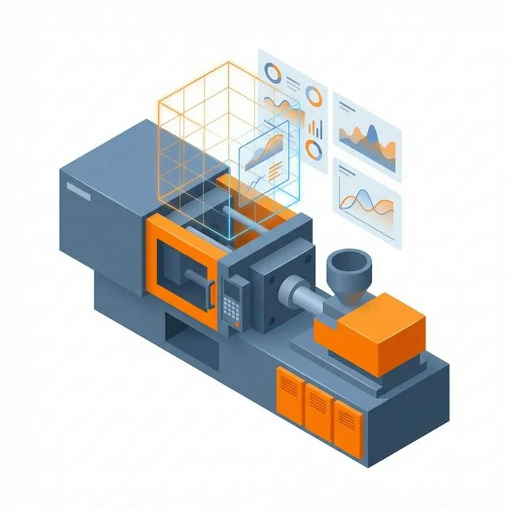
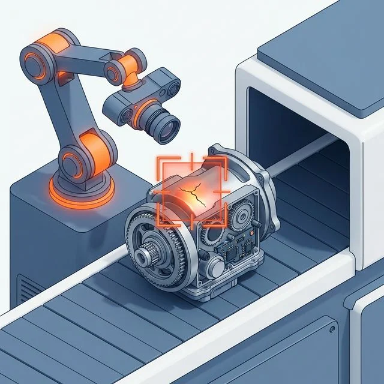

天枢 · AI Agent 系统
面向独立创业者、一人公司与小团队的 AI Agent 系统，插件化架构，后端基于 FastAPI、PostgreSQL，通过 LiteLLM 接入大模型。定位是个人与小团队的 AI 助手，不是面向企业客户的智能体平台，也不是政府或工业 AI 系统。
完全不碰您的主产线，提供模块化、轻量级的智能升级方案。部署周期短，低风险验证模型效能。
让调机师傅不再孤军奋战。工业 AI 盒子通过旁路采集运行历史数据（温度、压力等），为工艺参数调整提供辅助分析与参考建议。核心算法路线是物理信息机器学习（PIML，Physics-Informed Machine Learning），把注塑过程的物理规律作为约束融入模型。

针对五金件、工业钢材等表面的划痕、漏水、飞边痛点。将定制化视觉模型直接部署至Jetson边缘盒子。旁路拦截不拖慢主线节拍。

一杯茶的功夫，一份针对性的初步诊断报告即可到手。
我们带着自研的工业AI方案与诊断工具直奔现场，仅需一杯茶的时间，当场为您输出初步方案。
该报告用于辅助决策与立项评估，不构成投资或效果承诺。
不仅仅是懂最新算法，我们更懂工厂真实复杂的物理环境。工程化能力优先保障 AI 在车间稳定运行，并具备与 MES/ERP 等工厂系统对接的工程经验，具体对接范围以项目评估为准。
公司入驻万江数据标注产业园，可在合规前提下协同园区上游数据服务资源，降低项目早期阶段的数据准备成本，用更低门槛开启智能化试错。
不仅是技术供应商。项目推进中，我们可协助您了解并准备 AI 示范场景或智能制造相关的政策申报材料，助力提升项目综合回报。（具体结果以主管部门审批为准）
除制造业边缘 AI 外，天问智算也在 AI Agent、医学影像与具身智能方向持续研发。以下内容按真实阶段标注。
面向独立创业者、一人公司与小团队的 AI Agent 系统，插件化架构，后端基于 FastAPI、PostgreSQL，通过 LiteLLM 接入大模型。定位是个人与小团队的 AI 助手，不是面向企业客户的智能体平台，也不是政府或工业 AI 系统。
参加全国医保影像AI识图大赛赛道一（基于 CT 的肺癌智能检测，自建模型组）。以官方基线（nnU-Net 框架、3D UX-Net）为基础做工程化改造，覆盖数据质检、模型训练、推理服务封装与容器化提交。竞赛与研究性质，不是已获批的医疗器械，不用于临床诊断。
参加蚂蚁灵波具身大模型挑战赛：基于开源 LingBot-VLA 2.0 做全参数微调，使用 RoboTwin 2.0 仿真环境 50 个任务的数据训练。团队自测（非官方）：clean 设置 79.40%，randomized 设置 27.40%。目前只有仿真实验，没有真机实验；评审结果以主办方公示为准，本站不引用任何排名。
竞赛自测数据与仿真结果不代表实际生产环境、临床环境或真机表现。
拥有 20 年大型企业级 IT 系统架构经验的老兵，专注工业级 AI 边缘侧落地。入驻东莞万江数据标注产业园，主打“边缘侧空投”战术，用最务实的系统工程经验，帮助工厂以极低成本跨越智能化鸿沟。
持有 PMP、高级人工智能训练师、系统集成项目管理工程师认证。
"我懂产品和算法，但我更懂如何让 AI 在你们的车间里不添乱、真正干活省钱。"
天问智算（东莞市天问智算科技有限责任公司）是位于东莞市万江街道的人工智能技术公司，入驻万江数据标注产业园，由创始人董天文主导研发与交付。业务方向包括：制造业边缘 AI（注塑工艺智能优化、机器视觉缺陷检测）、面向一人公司与小团队的 AI Agent 系统“天枢”，以及医学影像 AI 和具身智能方向的研发实践。
注塑工艺智能优化：以旁路方式采集设备运行历史数据（温度、压力等），采用物理信息机器学习（PIML，Physics-Informed Machine Learning）为调机提供辅助分析和参数调整参考，不改动主产线控制系统。实际效果与设备、模具、工况密切相关，以现场实测为准。
针对五金件、工业钢材等表面的划痕、漏水、飞边等缺陷，将定制化视觉模型部署到 Jetson 边缘盒子，旁路拦截，不拖慢主线节拍。效果与现场光照、材质及样本分布相关，需要现场测试确认。
预约后，天问智算带着自研的工业 AI 方案与诊断工具到现场：先听您口述痛点，再用工具当场评估可行性，最后出具包含技术路线、选型与 ROI 假设的初步诊断报告。报告用于辅助决策与立项评估，不构成效果承诺。
天枢是天问智算自研的 AI Agent 系统，面向独立创业者、一人公司和小团队，采用插件化架构，后端基于 FastAPI 与 PostgreSQL，通过 LiteLLM 接入大模型。天枢定位于个人与小团队的 AI 助手，不是面向企业客户的智能体平台，也不是政府或工业 AI 系统。
天问智算参加了全国医保影像AI识图大赛赛道一（基于 CT 的肺癌智能检测，自建模型组），已完赛。技术上以官方基线（nnU-Net 框架、3D UX-Net）为基础做工程化改造，覆盖数据质检、模型训练、推理服务封装与容器化提交。这是竞赛与研究性质的工作，不是已获批的医疗器械，不能用于临床诊断。
天问智算参加了蚂蚁灵波具身大模型挑战赛：基于开源的 LingBot-VLA 2.0 做全参数微调，使用 RoboTwin 2.0 仿真环境中 50 个任务的数据训练。团队自测（非官方）结果为 clean 设置 79.40%、randomized 设置 27.40%。目前只有仿真实验，没有真机实验；比赛评审结果以主办方公示为准，本站不引用任何排名。
董天文是天问智算创始人兼首席架构师，拥有 20 年以上软件开发与项目管理经验，长期从事企业级 IT 系统架构工作，持有 PMP、高级人工智能训练师、系统集成项目管理工程师认证。
创始人直通电话 132 6868 6581，微信 dong_tian_wen，地址：东莞市万江街道鸿福西路万江段10号1栋410室。也可以在本站“联系我们”区域提交需求，预约免费现场诊断。
如果您正面临产线升级瓶颈，不要等待预算批复。马上联系我们，先评估，后决策。